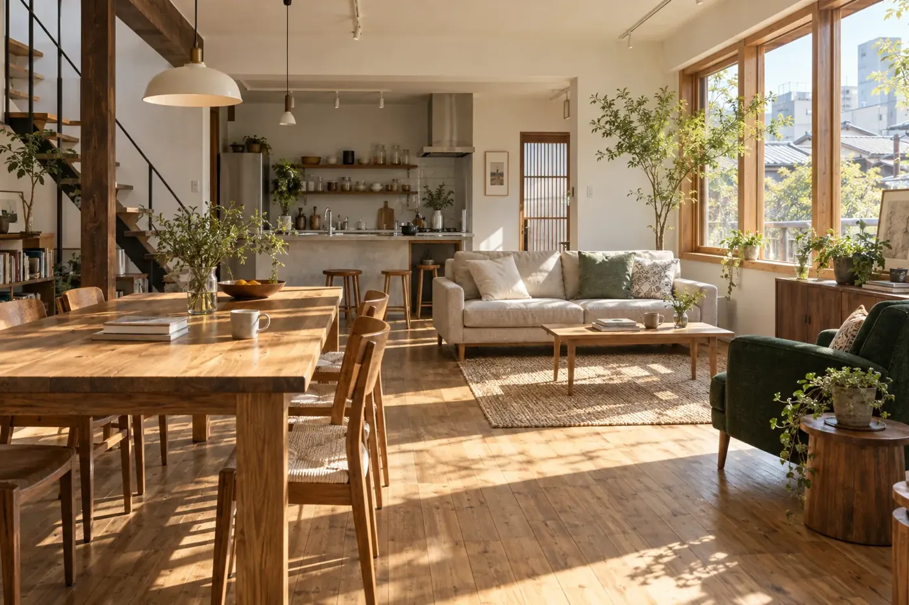
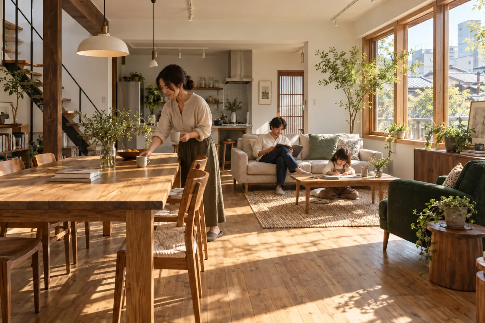
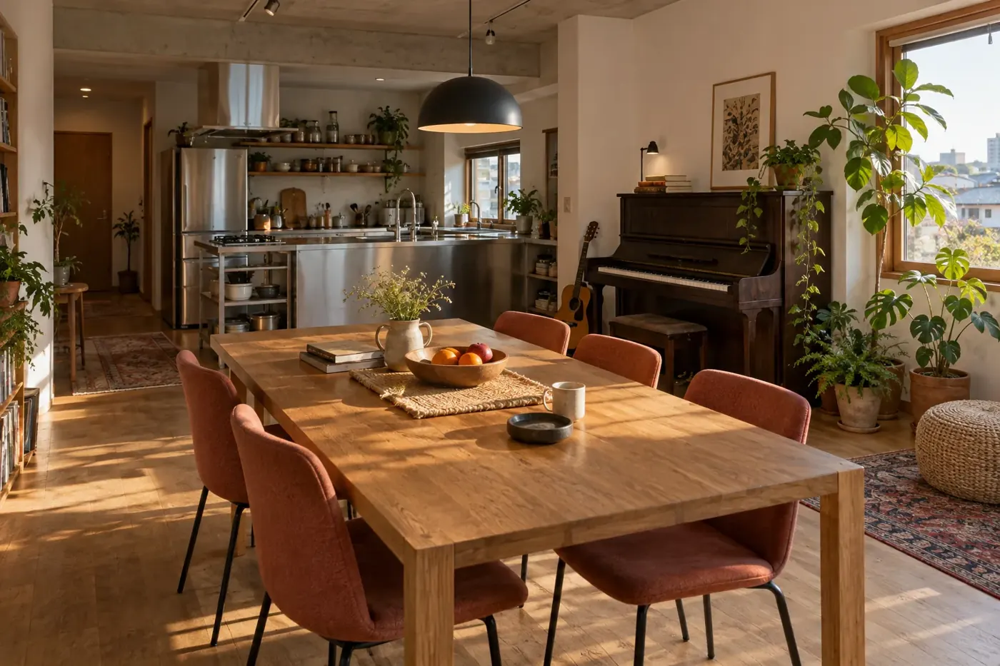
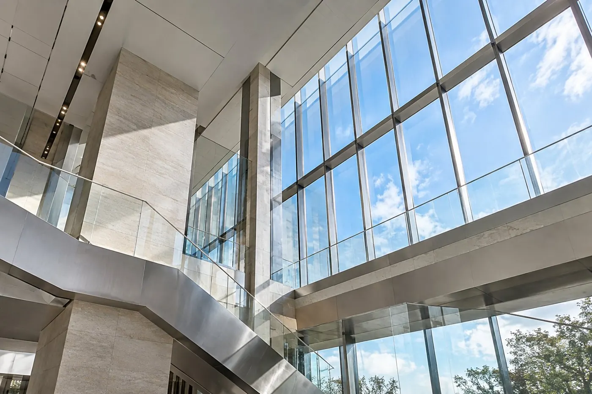

01 / LIVING
集まるための余白。
会話が生まれる場所と、静かに本を開く場所を、ひと続きの空間に。
Architecture for the life within.
図面の線が、光の入る場所になる。
素材の手ざわりが、毎日の景色になる。
SUMI / THE SPACE BETWEEN
A SPACE TO BE YOURSELF.
朝、どこに光が落ちるか。帰ってきたとき、何が見えるか。家族と過ごす時間と、ひとりで過ごす時間。その両方に居場所をつくるために、まず暮らしを聞くことから始めます。
素材に触れる土台をつくり、柱を立て、光の入り方を確かめながら部屋を仕上げる。ひとつひとつの手仕事が、これからの暮らしを支えます。
施工写真は同じ架空建物の工程を想定したAI生成の構想画像です。


工事の先に、誰かの新しい日常がある。
木、塗り壁、石。素材は同じでも、光の入り方と置く場所で表情が変わる。空間ごとの組み合わせを、写真でたどってください。

手を伸ばす場所に、木の温度を。
住まいにも、働く場所にも。使う人の動きに合わせて、必要な余白を考える。
会話が生まれる場所と、静かに本を開く場所を、ひと続きの空間に。

働く人が心地よく、訪れる人も入りやすい。内と外の距離を整える。
新しくつくることも、使い続けるために直すことも。建物と暮らしの関係から、必要な方法を考えます。
今の困りごとと、これからの過ごし方を整理します。
建物の状態と条件を調べ、できることを見極めます。
優先したいことを図面と素材に落とし込みます。
工程を確認しながら、暮らしの場所に仕上げます。